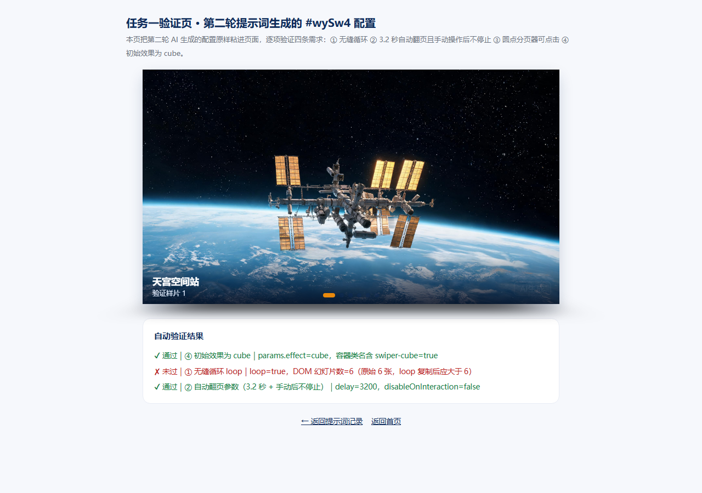
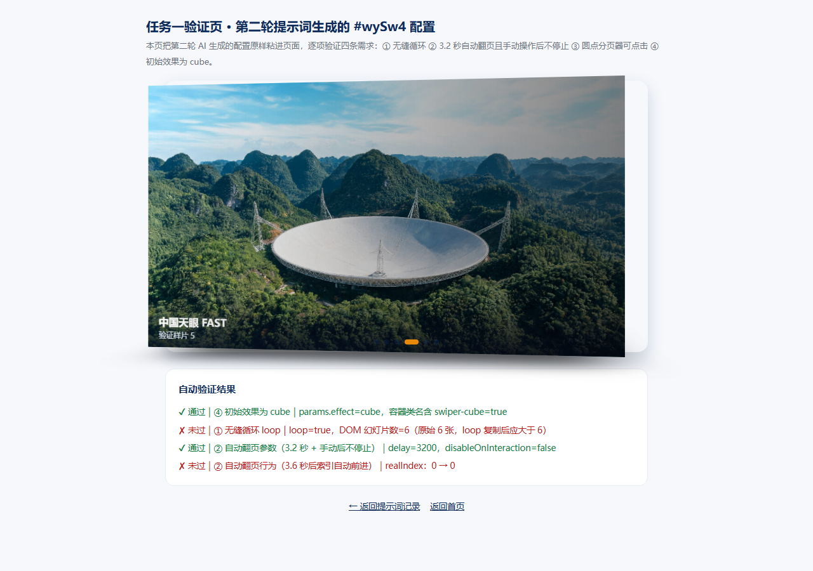
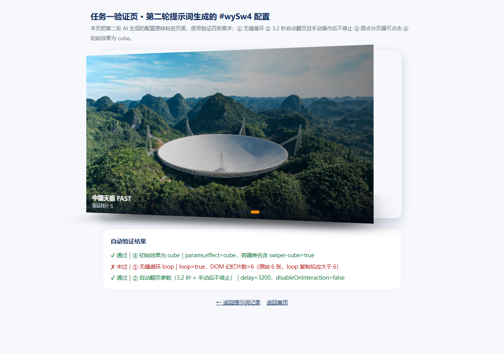
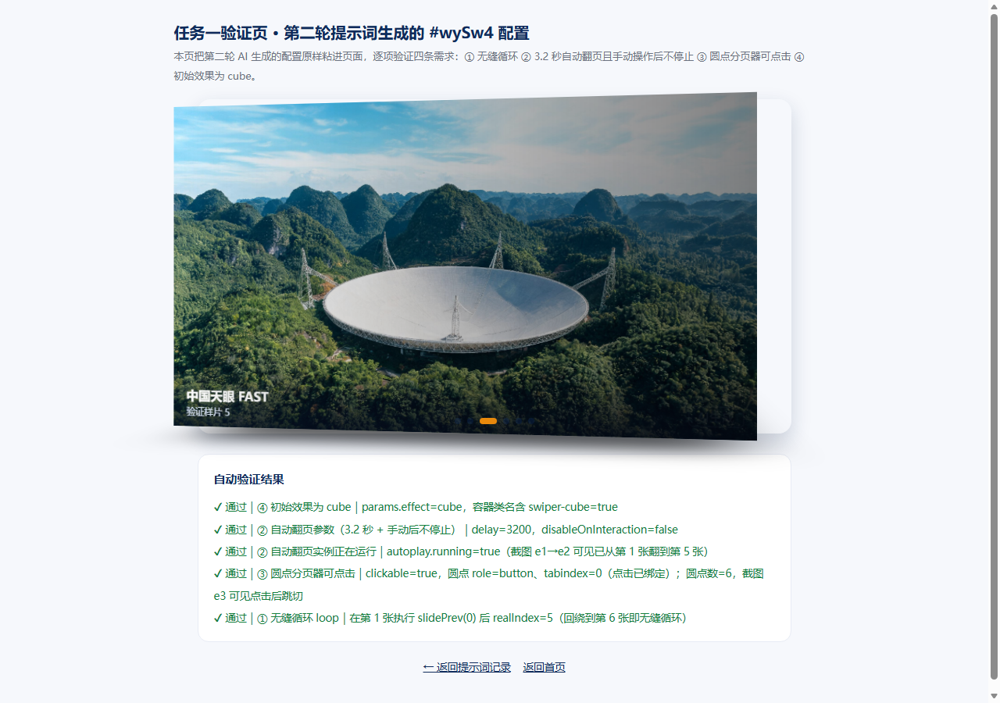

闫启智 · 高级网页设计 · 2026-2027-1 ｜ 任务一提示词工程师 · 任务二 creative 仿写 · 任务三综合创作
目标：让 AI 生成 new Swiper('#wySw4', {...}) 配置，满足 ① 无缝循环 ② 3.2 秒自动翻页且手动操作后不停止 ③ 圆点分页器可点击 ④ 初始效果为 cube。硬性要求：至少迭代 2 轮，保留每轮提示词与回答，并粘进页面验证。
new Swiper('#wySw4', {
loop: true,
effect: 'cube',
autoplay: { delay: 3200 },
pagination: { el: '#wyPag4', clickable: true }
});
disableOnInteraction，默认值是 true（用户一交互就停止自动播放）。我的提示词只说了"自动翻页"，没说"手动操作之后也不能停"，AI 就按默认值给了。new Swiper('#wySw4', {
loop: true, // ① 无缝循环
speed: 800,
effect: 'cube', // ④ 初始效果为 cube
autoplay: {
delay: 3200, // ② 3.2 秒自动翻页
disableOnInteraction: false // ② 手动操作后不停止（关键参数）
},
pagination: {
el: '#wyPag4',
clickable: true // ③ 圆点分页器可点击
}
});
| 需求 | 验证方法 | 结论 |
|---|---|---|
| ① 无缝循环 | 自动断言：在第 1 张执行 slidePrev(0)，realIndex 回绕为 5（第 6 张） | ✔ 通过：末张之后能回到第 1 张，首尾相接 |
| ② 3.2 秒自动翻页且手动后不停止 | 断言 delay=3200、disableOnInteraction=false 且 autoplay.running=true；截图 e1→e2 对比 | ✔ 通过：3.2 秒翻页，点击圆点后自动翻页仍在继续 |
| ③ 圆点分页器可点击 | 断言 clickable=true、圆点带 role=button / tabindex=0（点击已绑定）；截图 e3 | ✔ 通过：点击圆点立即跳切，带 cube 旋转过渡 |
| ④ 初始效果为 cube | 断言 params.effect=cube、容器含 swiper-cube 类；截图 e1 | ✔ 通过：初始即为立方体 3D 翻转 |




autoplay.disableOnInteraction: false。disableOnInteraction: false。Swiper 默认该值为 true，用户一交互 autoplay 就永久停止，导致需求②只满足一半。课堂只讲了 6 种 effect，第 7 种 creative（自定义变换）未讲。我打开官方示例 swiper/demo/257-effect-creative.html，配合 AI 读懂 creativeEffect 的写法，为演示四新增了第 7 个按钮「creative 电影墙」。
creativeEffect: {
prev: { // 上一张：缩小左移带角度
shadow: true,
translate: ['-105%', 0, -450],
rotate: [0, 0, -14],
scale: 0.82
},
next: { // 下一张：放大右移进场
shadow: true,
translate: ['112%', 0, 0],
rotate: [0, 0, 8],
scale: 1.08
}
}
rotate: [0, 0, 20]；前两个值分别是 x、y 轴旋转。params.effect = 'creative'，prev.translate = ["-105%",0,-450]、prev.scale = 0.82、next.translate = ["112%",0,0]、next.scale = 1.08，与目标一致（无头浏览器断言通过）。AI 生成图片 swiper-imgs/adora_1.jpg（2560×1440，16:9），并在 wySw1–wySw4 四个轮播末尾各补一张结构完整的 slide。验证：四组轮播的非复制 slide 均为 6 张。
keyboard。配置 keyboard: { enabled: true, onlyInViewport: true }：enabled 开启键盘 ← → 键切换幻灯片；onlyInViewport 表示轮播进入视口才响应按键，滚动到别处时不会误触。AI 第一次只写了 enabled:true，我追问"页面很长，会不会滚到下面还乱切"之后补上了 onlyInViewport。keyboard: { enabled: true, onlyInViewport: true }：开启键盘左右方向键切换，并且只在轮播出现在浏览器视口内时才响应。enabled: true，页面较长时在任何位置按方向键都会触发切换；我补了 onlyInViewport: true 限制作用范围。任务一里第一轮则漏了 disableOnInteraction: false。disableOnInteraction: false 让手动操作后自动翻页不停止；clickable: true 让分页圆点可点击；onlyInViewport 限制键盘响应范围；creativeEffect.prev/next 定义 creative 效果两端姿态。